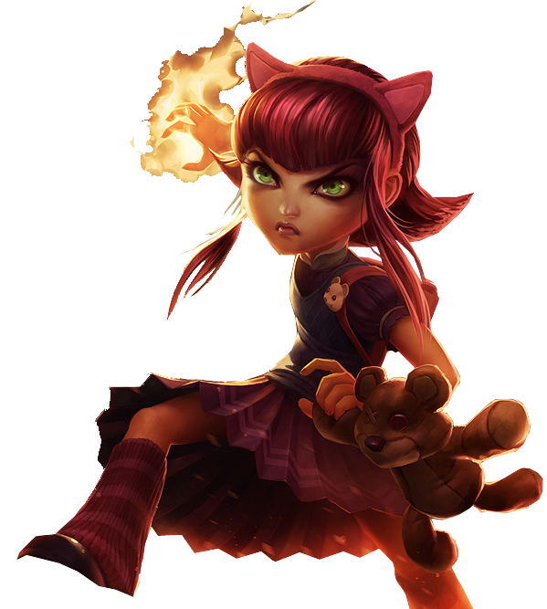
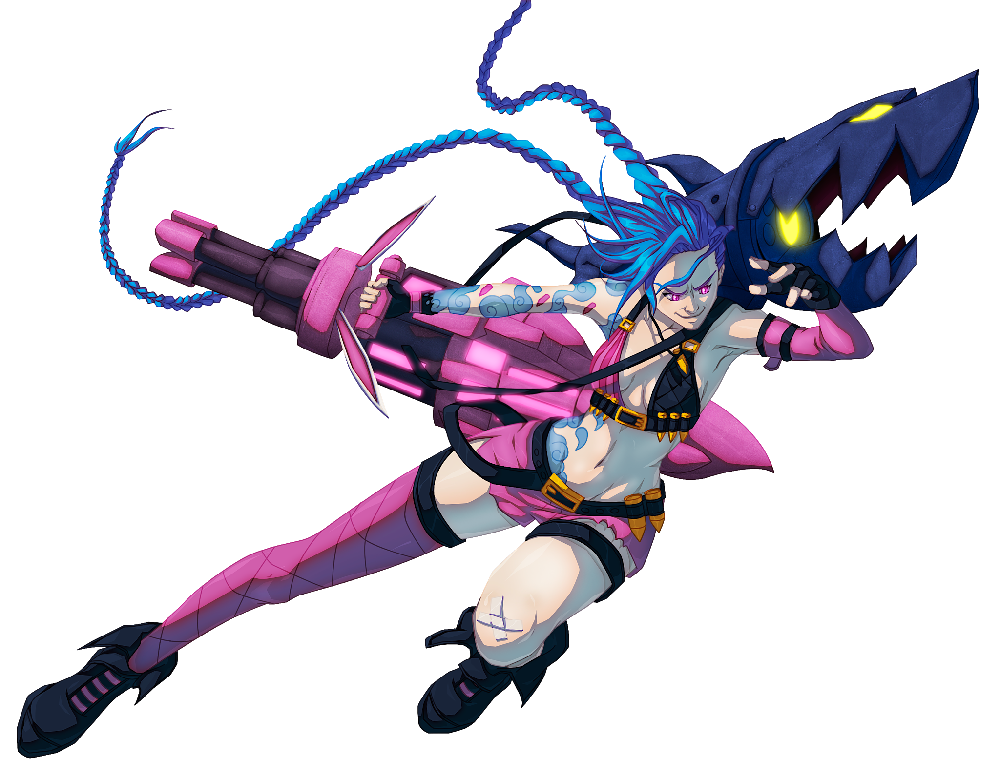
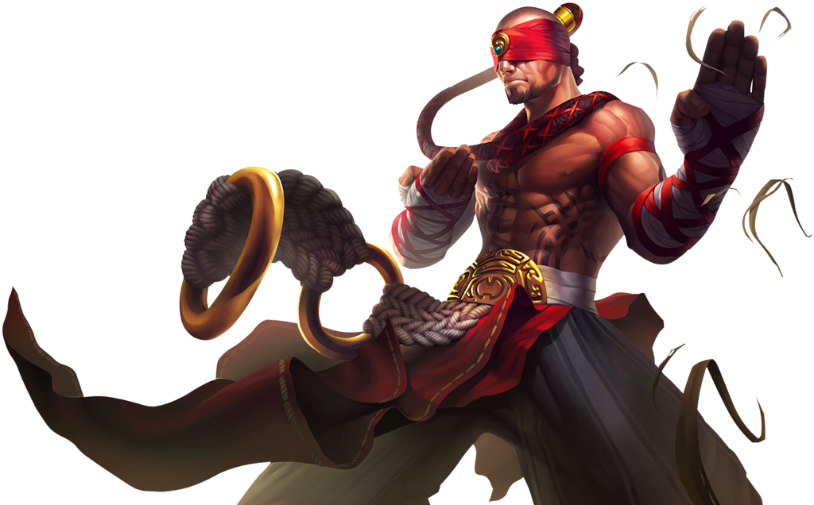
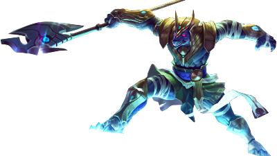
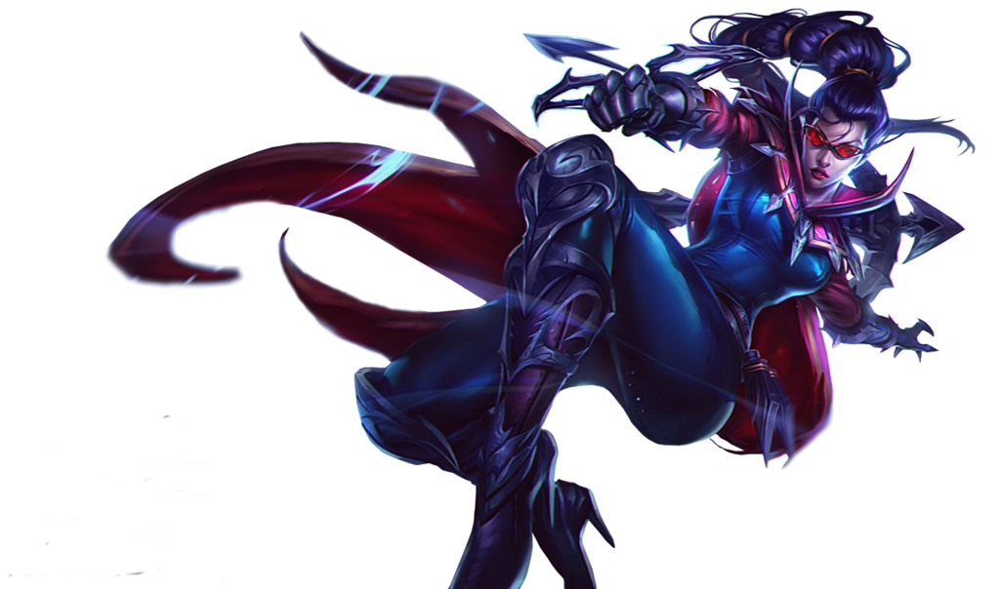
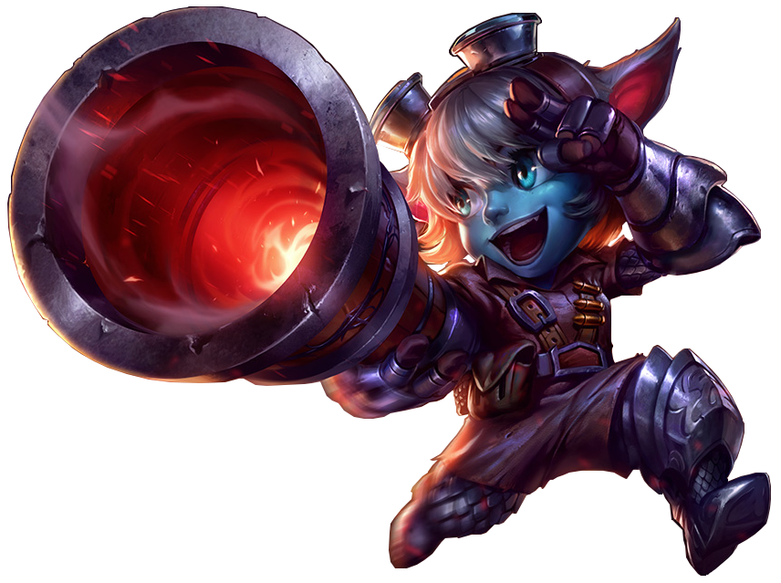

-
Annie #001
- Mid
Annie é uma maga poderosa que aprendeu a controlar seu poder de fogo. Ela mantém uma mistura única de curiosidade infantil e poder mágico letal.
-
Ashe #002

- adc
- suporte
Ashe é a líder corajosa da tribo Avarosan em Freljord. Ela é uma arqueira habilidosa e estrategista brilhante, que busca a unificação de sua terra natal através do poder, da justiça e da honra.
-
ahri #003

- Mid
Ahri é uma Vastaya sedutora e misteriosa, que possui habilidades mágicas únicas. Ela busca entender sua própria natureza e encontrar uma conexão autêntica com os seres humanos, enquanto luta contra sua sede de almas e enfrenta os desafios do mundo de Runeterra.
-
Ekko #004

- Mid
- Jungle
Ekko é um jovem talentoso de Zaun, que possui a habilidade de manipular o tempo. Ele usa seus dons para lutar contra a opressão e a injustiça em sua cidade, tornando-se um símbolo de esperança e inspiração para os menos privilegiados.
-
Jinx #005
- adc
Jinx é uma campeã psicopata e caótica, que encontra alegria no caos e na destruição. Ela desafia as normas de Piltover e Zaun, espalhando terror e pânico com suas habilidades explosivas e comportamento imprevisível.
-
Kha'zix #006

- Jungle
Kha'Zix é uma criatura predatória vinda do Vazio, com uma sede insaciável de caçar e evoluir. Ele é um assassino furtivo e adaptável, que busca constantemente desafios para absorver as habilidades de suas presas e se tornar cada vez mais mortal.
-
Lee sin #007
- Jungle
Lee Sin é um monge cego de Ionia, um mestre das artes marciais que busca a iluminação espiritual. Ele superou sua deficiência e se tornou um lutador ágil e poderoso. Lee Sin é um símbolo de força, perseverança e sabedoria, usando suas habilidades marciais para proteger Ionia.
-
Nasus #008
- Top
Nasus é um guardião imortal das areias de Shurima, que busca conhecimento e sabedoria. Ele possui habilidades ligadas às areias e ao tempo, tornando-se um lutador poderoso. Nasus é uma figura majestosa e sábia, comprometida em proteger o mundo de ameaças antigas e preservar a grandeza de Shurima.
-
Vayne #009
- adc
- Top
Vayne é uma caçadora noturna de Demacia, determinada a eliminar criaturas sobrenaturais e proteger os inocentes. Ela é uma atiradora habilidosa e implacável, armada com uma besta prateada e flechas especiais. Vayne personifica a coragem e a justiça, lutando contra o mal nas sombras.
-
Yasuo #010

- Mid
- Top
Yasuo é um ronin, um espadachim sem mestre, em busca de redenção e da verdade por trás do assassinato de seu mestre. Ele é um guerreiro habilidoso, capaz de desferir golpes letais com sua Lâmina do Vento. Yasuo personifica a perseverança, a determinação e a busca pela verdade.
-
Tristana #011
- Adc
Tristana é conhecida por seu otimismo, determinação e habilidades como uma atiradora habilidosa. Ela se tornou uma lenda entre os yordles e é frequentemente vista liderando a linha de frente em batalhas, disparando seu canhão com precisão e causando estragos nos inimigos.